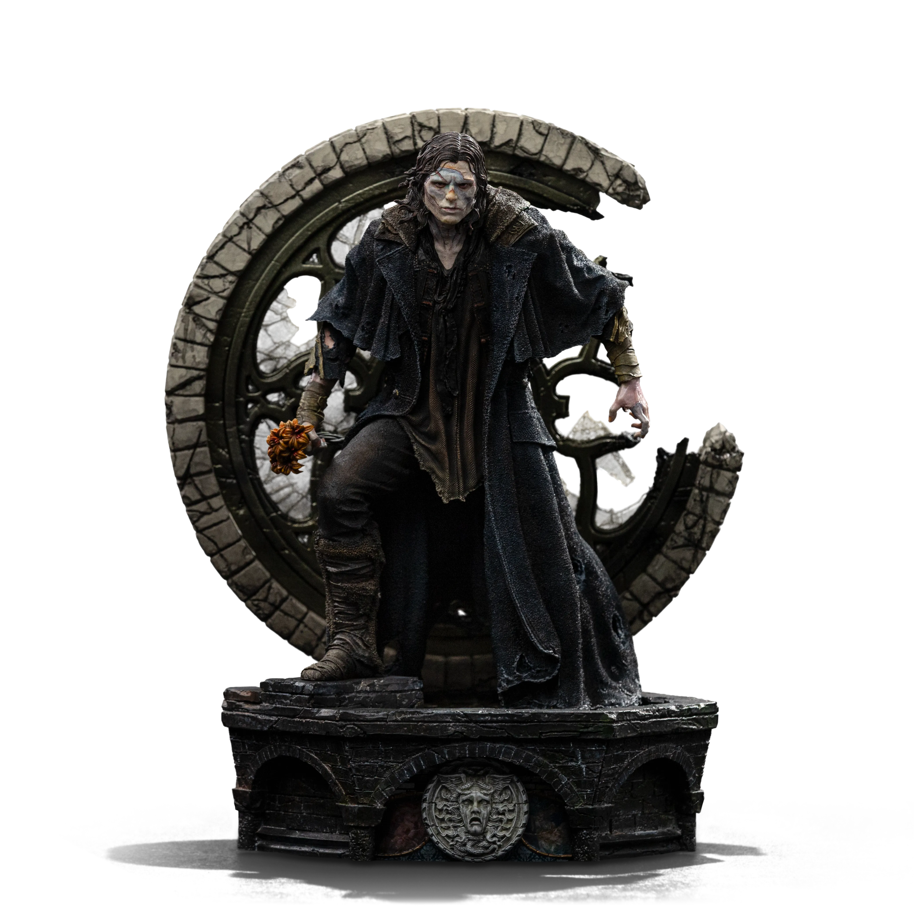

CHAPTER V
It was on a dreary night of November, that I beheld the accomplishment of my toils. With an anxiety that almost amounted to agony, I collected the instruments of life around me, that I might infuse a spark of being into the lifeless thing that lay at my feet. It was already one in the morning; the rain pattered dismally against the panes, and my candle was nearly burnt out, when, by the glimmer of the half-extinguished light, I saw the dull yellow eye of the creature open; it breathed hard, and a convulsive motion agitated its limbs.
“By the glimmer of the half-extinguished light, I saw the dull, yellow eye of the creature open; it breathed hard, and a convulsive motion agitated its limbs, ...
I rushed out of the room.”
How can I describe my emotions at this catastrophe, or how delineate the wretch whom with such infinite pains and care I had endeavoured to form? His limbs were in proportion, and I had selected his features as beautiful. Beautiful!—Great God! His yellow skin scarcely covered the work of muscles and arteries beneath; his hair was of a lustrous black, and flowing; his teeth of a pearly whiteness; but these luxuriances only formed a more horrid contrast with his watery eyes, that seemed almost of the same colour as the dun white sockets in which they were set, his shrivelled complexion and straight black lips.
The different accidents of life are not so changeable as the feelings of human nature. I had worked hard for nearly two years, for the sole purpose of infusing life into an inanimate body. For this I had deprived myself of rest and health.